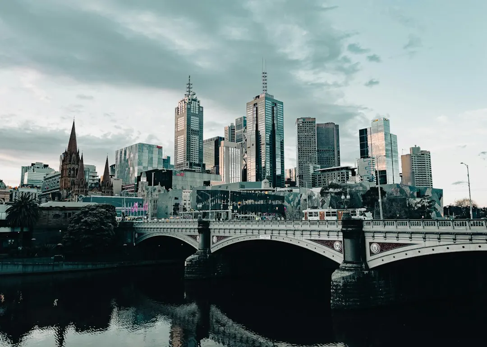

A single-phase board upgrade typically costs $800 to $3,500 or more, while a three-phase upgrade typically costs $3,000 to $5,000 or more. The final price depends on circuit numbers, existing wiring, scope and complexity. Older ceramic fuse boards may lack RCD protection and spare capacity, while asbestos-backed boards require careful handling. A licensed electrician should assess the board, provide a clear quote, complete the work and issue a Certificate of Electrical Safety.
For homeowners comparing switchboard upgrades melbourne options, the practical decision is whether the property needs a straightforward board change, extra protection, three-phase capacity or specialist removal work.
Switchboard Upgrades Melbourne Explained
The guide from Switchboard Upgrades Melbourne describes many older Melbourne homes as still having ceramic fuse-type switchboards installed in the 1980s or earlier. These boards can use rewireable fuses, have no safety switches and leave little spare capacity for modern household electricity use.
Frequent fuse failures or circuits tripping when appliances such as a heater and kettle run together are practical reasons to arrange an assessment. A board without RCD protection also needs closer attention, because a safety switch is designed to cut power when it detects current leaking to earth.
- Photograph the board and note visible fuse carriers and labels.
- Record which appliances are running when a fuse fails or circuit trips.
- Tell the electrician whether solar, a smart meter or new appliances are planned.
Matching the board to the property
A single-phase switchboard upgrade replaces older fuses with circuit breakers and safety switches, with room for future circuits. The appropriate arrangement still depends on the existing wiring and the assessment of the property.
Three-phase work may suit larger homes, workshops and properties with higher-draw appliances. It is more involved and must be scoped by the assessing electrician. A like-for-like single-phase replacement and a higher-capacity three-phase project should therefore be compared as different jobs.
An RCBO combines overload protection and safety switch protection in one device. Ask which circuits will receive RCD or RCBO protection, what spare capacity remains and whether the proposed board supports planned solar or smart meter work.
Asbestos-backed boards and electrical compliance
Some older ceramic fuse-type boards have asbestos backing. The supplied guide says removal and disposal must follow WorkSafe Victoria asbestos rules. A trained electrician may handle a small, sound, non-friable board within strict limits, while other situations require a licensed asbestos removalist.
Raise that possibility before work starts. Ask who will identify the backing, who is responsible for removal and disposal, and whether the quote changes if specialist work is required. Asbestos-related work should not be treated as an ordinary part of every board replacement.
The completed installation should come with a Certificate of Electrical Safety. A main switchboard replacement is described as prescribed work, with an independent licensed electrical inspector checking it under Energy Safe Victoria's certificate guidelines. Keep the certificate with the property's electrical records.
Comparing quotes without comparing unlike jobs
The supplied guide gives a typical range of $800 to $3,500 or more for a single-phase upgrade, depending on circuit count and existing wiring condition. Its typical range for three-phase work is $3,000 to $5,000 or more, depending on scope and complexity. These are reference ranges, not a guaranteed price for a particular home.
A useful quote should identify the board type, number of circuits, protection devices, wiring changes, asbestos-related responsibilities, inspection requirements and certification. Ask whether solar or smart meter compatibility has been considered if those additions are planned.
Price differences can reflect the condition of existing wiring or the amount of work needed for the completed board. The assessing electrician should explain the scope before you decide. The enquiry process described in the guide provides a clear quote with no obligation to proceed.
Who this guide applies to
This guide is for Melbourne-area homeowners dealing with an older ceramic fuse board, repeated tripping, missing RCD protection, limited circuit capacity or planned electrical additions. It also applies to owners of larger homes, workshops and properties where three-phase power may be appropriate.
It is not a substitute for an inspection. A photograph or description can start the conversation, but the electrician needs to check the switchboard, wiring and circuits before confirming the work. If asbestos backing is suspected, include that information in the first enquiry.
For adjacent electrical work, see the related guide to switchboard replacement in Melbourne. The practical question is what condition the existing installation is in, and what protection and capacity the property needs next.
- Describe the existing board. Provide the suburb, board photos if available, visible fuse or switch details and any repeated tripping symptoms.
- Arrange an assessment. Ask a licensed electrician to check the switchboard, wiring and circuits and explain whether single-phase or three-phase work is appropriate.
- Review the written quote. Confirm protection devices, circuit work, asbestos responsibilities, compatibility with planned equipment and the total scope.
- Confirm certification. After completion, obtain the Certificate of Electrical Safety and keep it with the property records.
| Project type | Typical guide range | Main quote variable |
|---|---|---|
| Single-phase board | $800 to $3,500+ | Circuit count and existing wiring condition |
| Three-phase board | $3,000 to $5,000+ | Scope and complexity |
Common questions
What does a typical single-phase upgrade cost? The supplied guide gives a typical range of $800 to $3,500 or more. Circuit count and the condition of existing wiring affect the final quote.
When might three-phase work be considered? The guide identifies larger homes, workshops and properties with higher-draw appliances as situations where three-phase power may be needed. An assessing electrician must confirm the requirement and scope.
Can an old ceramic fuse board have asbestos backing? Yes. Some older ceramic fuse-type boards can have asbestos backing, so removal and disposal should be discussed before work begins.
What protection can replace rewireable fuses? The options described include modern circuit breakers, safety switches and RCBOs. An RCBO combines overload protection and safety switch protection in one device.
What document should be issued after the work? The electrician should issue a Certificate of Electrical Safety on completion. A main switchboard replacement is also described as prescribed work and receives an independent licensed inspection.
This guide covers Melbourne switchboard assessment, upgrade options, protection devices, asbestos-backed boards, quote comparisons and certification.